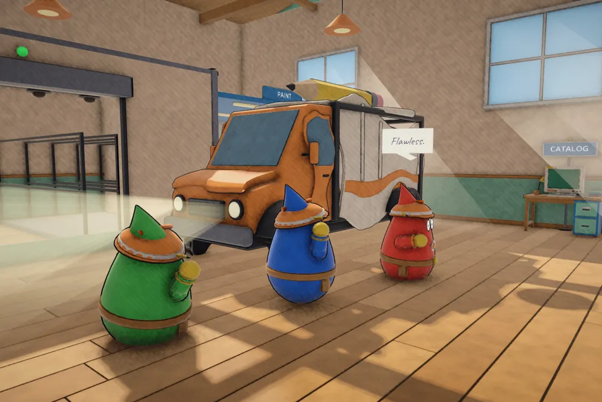
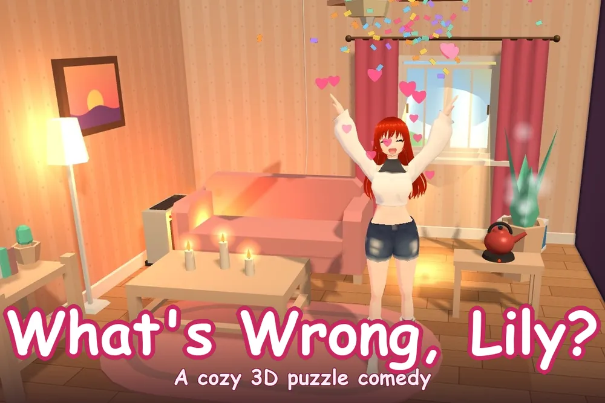
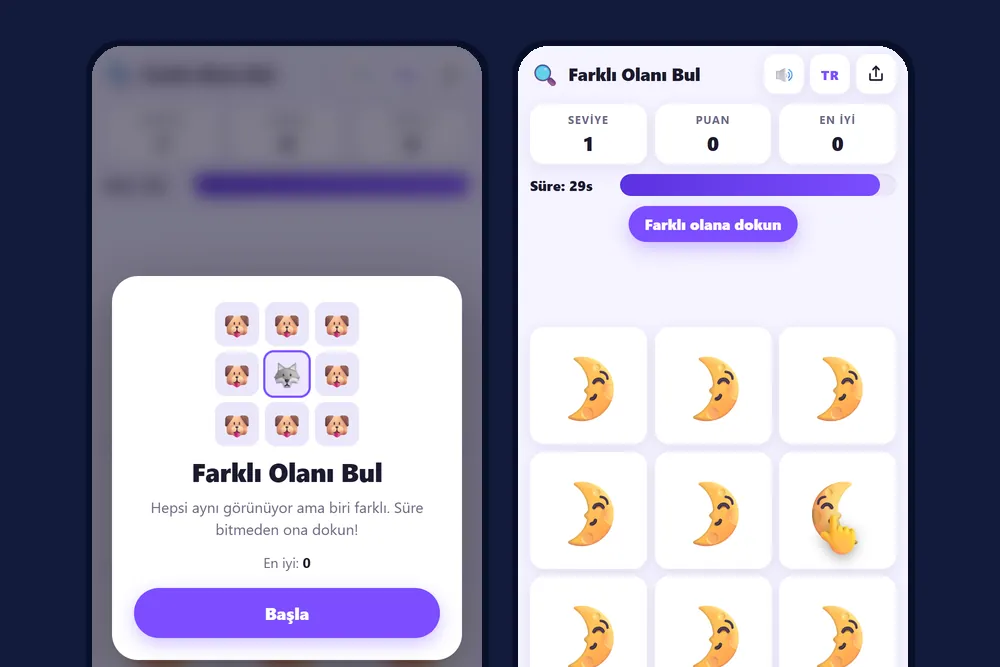
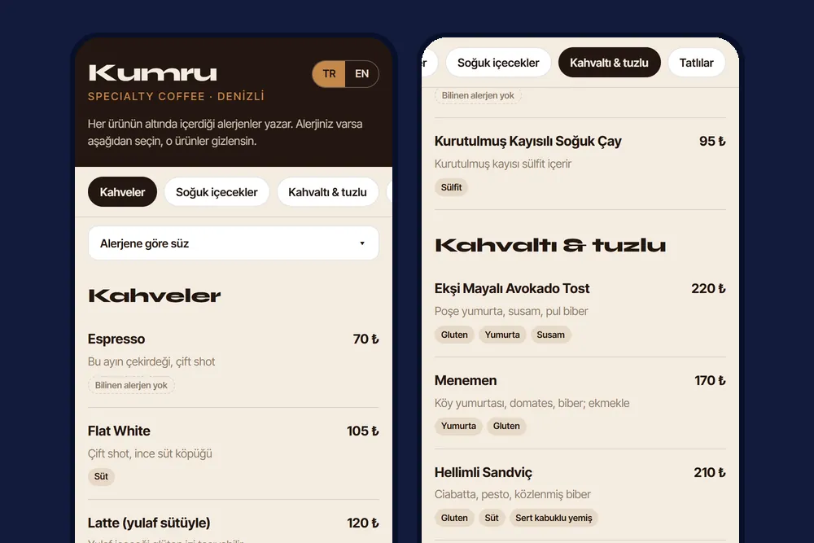
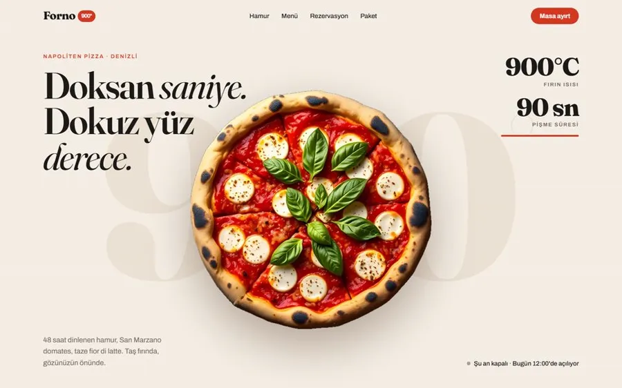
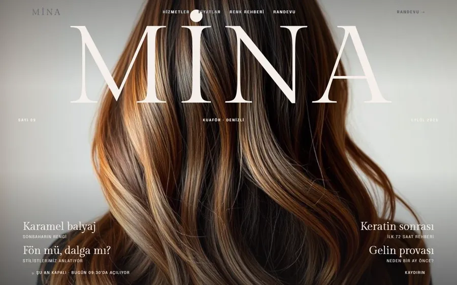
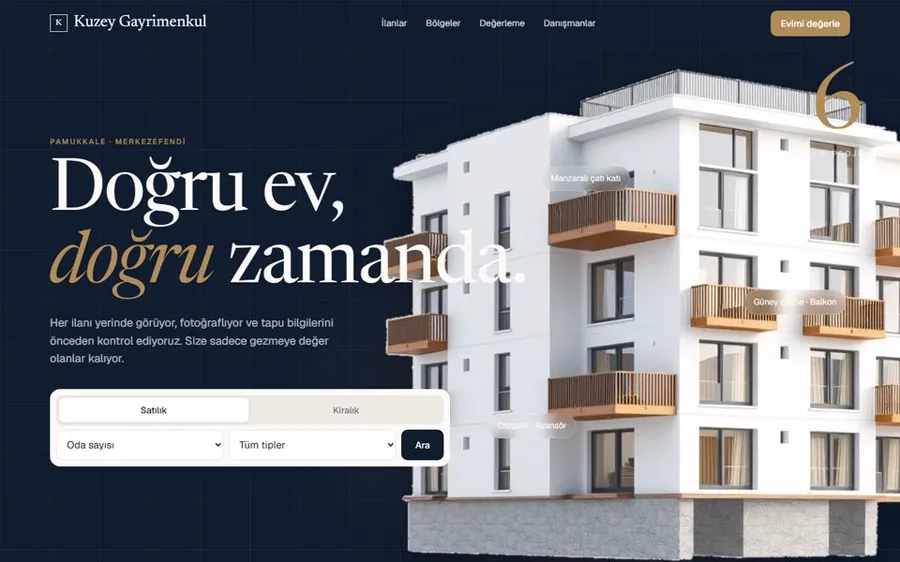
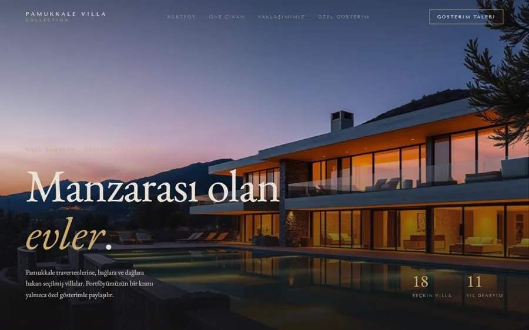
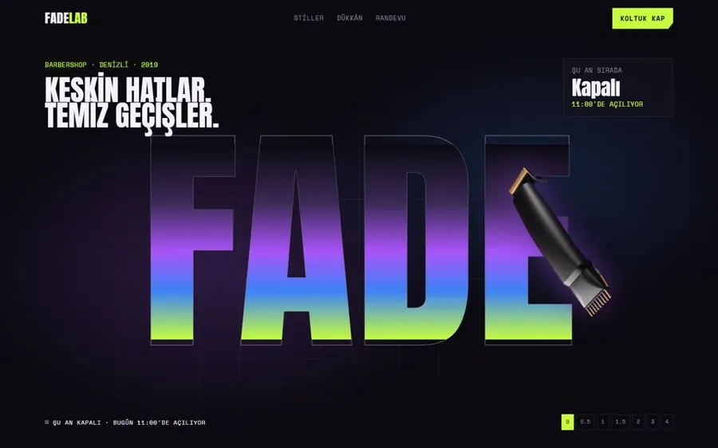

geliştiriliyor
Scrawl Co.
Çizdiğiniz her şeyin bir sorun olduğu, iki kişilik 3B kooperatif komedi. Dünyası ve sesi kodla üretilir; on iki dilde.
- Unity 6
- C#
- HLSL
- Netcode
web / uygulama / oyun / otomasyon / video
Web sitesi, mobil uygulama, oyun, otomasyon ve video: tek elden, baştan düşünülmüş işler. Şablon değil; her iş kendi derdine göre kurulur.
Web sitesinden oyuna, mobil uygulamadan otomasyona. Her kartta işin ne yaptığı ve dürüst bir durum etiketi var: yayında olan da, hâlâ yapılan da.

Çizdiğiniz her şeyin bir sorun olduğu, iki kişilik 3B kooperatif komedi. Dünyası ve sesi kodla üretilir; on iki dilde.
Pamukkale'den ilham alan bir kafe için 3B karşılama sahnesi, alerjen süzgeçli menü ve iki dokunuşta masa ayırtma. Örnek çalışma.
(dükkân fiyatı + kargo) ÷ (1 − komisyon) = satış fiyatı
Komisyon ve kargo satış fiyatına eklenir; dükkân fiyatı net kalır.
İsimsiz bir aile işletmesi için: ürünler, siparişler, ödeme seçenekleri, bayi fiyatları ve yönetim paneli tek sistemde.

Bir işletmenin Google Haritalar profilini rakipleriyle yan yana okuyup puanlı karne çıkarır. Örnek rapor, kurgusal veri.

Tarayıcıda oynanan, rahat tonlu 3B bulmaca komedisi. Bir oyun portalında test yayını yapıldı (5.000+ oynama).

Aynı görünen emojiler arasından farklı olanı süreyle bulduran, telefona yüklenebilen hızlı bulmaca.

Telefonla barkod okutup stok ve sepet hesaplayan, çevrimdışı çalışan, ortaklarla canlı eşitlenen uygulama. Görseller demo veriyle.

Müşteri numara yazarak randevu alır; işletme günlük programı yönetim panelinden görür. Kurgusal berber üzerinde demo.
Bilgisayarı ve telefonu sesle yöneten kişisel yapay zekâ asistanı.

Kodda yalnız tek yöne yanlış çıkan hataları arayan, bağımlılıksız bir araç. Her kural, aradığı hatayı kendisi üreterek kanıtlanır.

Ürün başına net kazancı hesaplayıp zarar edenleri ve biten stokları günlük yapılacaklar listesine çevirir. Örnek veriyle.

Masadaki QR ile açılan, alerjene göre süzen, Türkçe ve İngilizce menü. Örnek çalışma.

Kafe, kuaför, emlak, pilates ve daha fazlası için baştan kurgulanmış otuz beş örnek site.

Fırının açık mı kapalı mı olduğunu canlı gösteren, masa ayırtmayı öne alan pizzacı sitesi.


Ev aramayı tek forma indiren, ilanlardan önce güven veren emlak vitrini.

Manzarayı ilk saniyede gösteren, gösterim talebini doğrudan toplayan villa sitesi.

Dükkânın açık olup olmadığını anında söyleyen, koltuğu tek dokunuşla ayırtan berber sitesi.
Logo animasyonu: tek fikir, iki renk, dolu bir son kare.
Bir çay markası için kısa hikâye animasyonu.
Bir sitenin tanıtımını on beş saniyede anlatan kısa video.
Durum etiketleri gerçeği söyler: konsept çalışmalardaki markalar ve veriler kurgusaldır; gerçek işletme adı, fiyat ya da müşteri bilgisi gösterilmez.
Tek başıma çalışırım; işin türü ne olursa olsun baştan sona aynı kişiyle konuşursunuz.
Telefonda hızlı açılan, ilk ekranda "ara, randevu al, yol tarif et" dedirten siteler. Gerekirse sinematik 3B girişle.
Telefona yüklenen uygulamalar ve paneller: arayüzü tasarlarım, çalışan sürümünü kurarım.
Tarayıcıda ya da bilgisayarda oynanan oyunlar, etkileşimli 3B sahneler ve markanıza özel mini oyunlar.
Tekrarlayan işi programa devretmek: stok, fiyat, randevu, rapor. Python ve web teknolojileriyle, ihtiyaca göre.
Logo animasyonu, tanıtım ve sosyal medya için kısa, tek fikirli videolar.
Haritalar profilinizi rakiplerinizle okuyup puanlı karne çıkarırım; adınız, sıkça sorulanlar ve sitenizin tutarlılığıyla yapay zekâ asistanlarına zemin hazırlarım. Hiçbir asistanda çıkacağınıza söz verilmez.
İşinizi, müşterinizi ve sizi ayıran şeyi anlarım.
Karar vermeden önce size özel bir taslak görürsünüz.
Onayladığınız yönde her ekranı özenle bitiririm.
Siteniz yayında; ölçer, iyileştiririm.
Kısaca anlatın, size özel bir önizlemeyle döneyim.